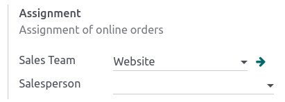

Order handling¶
When a customer orders on your eCommerce, there are three record types required to be handle in Odoo:
Sales orders¶
Order and payment status¶
The first step when a customer adds a product to his cart is the creation of a quotation. Orders can be managed either from the Website or Sales app. eCommerce orders can automatically be assigned to a specific sales team by going to . In the Shop - Checkout Process section, select a Sales Team or Salesperson to handle eCommerce orders.
Orders can be found under . Each order goes through a different status:
Quotation: a new product is added to the cart, but the customer has not gone through the checkout process yet;
Quotation sent: the customer has gone through the checkout process and confirmed the order, but the payment is not yet confirmed;
Order: the customer has gone through the checkout process, confirmed the order, and the payment is received.

Abandoned cart¶
An abandoned cart represents an order for which the customer did not finish the checkout confirmation process. For these orders, it is possible to send an email reminder to the customer automatically. To enable that feature, go to and in the Email & Marketing section, enable Automatically send abandoned checkout emails. Once enabled, you can set the time-lapse after which the email is sent and customize the email template used.
Note
For abandoned cart emails, the customer must either have entered their contact details during the checkout process; or be logged-in when they added the product to their cart.
Delivery orders¶
Delivery flow¶
Once a quotation has been confirmed, a delivery order is automatically created. The next step is to process this delivery.
Packing eCommerce orders usually requires picking the product, preparing the packaging, printing the shipping label(s) and shipping to the customer. Depending on the number of orders, strategy, or resources, those steps can be considered as one or multiple actions in Odoo.
An automatic email can be sent to the customer when the transfer status in Odoo is “done”. To do so, enable the feature in the settings of the Inventory app.
Note
If customers are allowed to pay when picking up their order in stores or by wire transfer, the quotation is not be confirmed and the stock is not be reserved. Orders must be confirmed manually to reserve products in stock.
Returns and refunds¶
Customers can only return an order through an online form. It may not be possible to return products depending on the return strategy or type of product.
Full refunds can be directly sent to customers from within the order interface. A refund-compatible payment provider needs to be enabled first.
Invoice and legal requirements¶
The final step of an ecommerce order is to generate the invoice and send it to the customer. Depending on the type of business (B2B or B2C), an invoice can either be generated automatically (B2B) or on demand of the customer (B2C). This process can be automated if (and when) the online payment is confirmed.
To automate invoicing, go to and in the Invoicing section, enable Automatic Invoice.